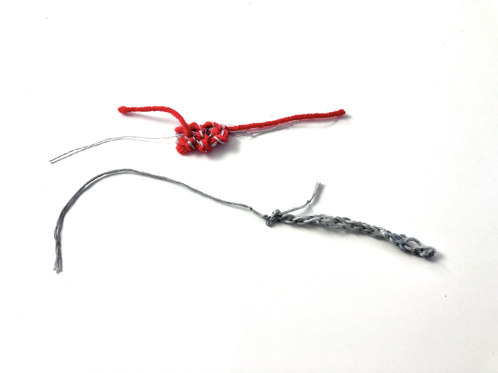
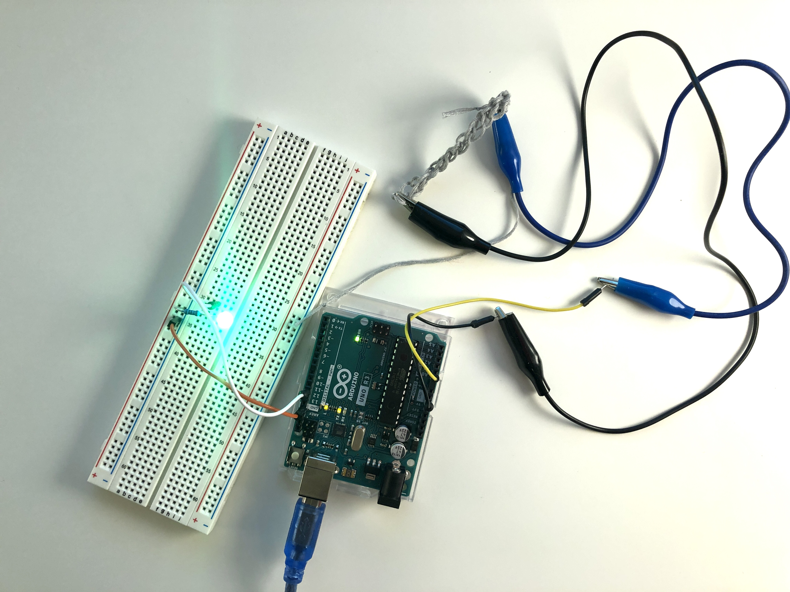
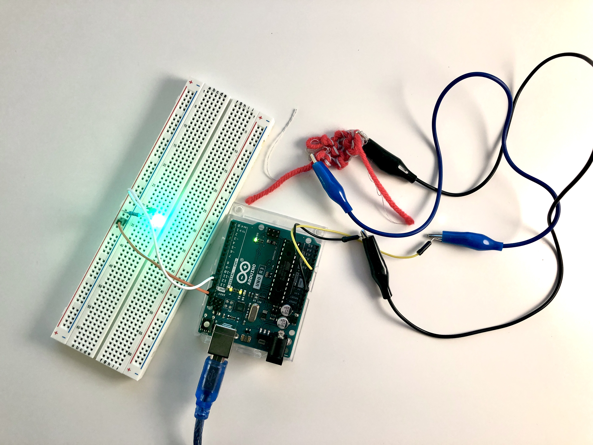

soft sensors
April 27, 2022
Description
I knitted a few soft sensors using conductive thread and non-conductive yarn. These soft sensors were then put into a circuit where values read from the sensor would affect an LED's behavior.
This was my first time creating textile-based soft sensors. During this experience, I learned how to knit and integrate my soft sensor in a circuit (used Arduino Uno). To check the sensor values I could get, I utilized the built-in example, AnalogReadSerial, on Arduino's platform. I created a total of four knitted soft sensor swatches, but only two of the sensors provided steady, reliable readings. These two sensors were put into a circuit. I treated one as a stretch sensor and mapped the sensor values to an LED's brightness. I programmed the second sensor as a button/touch sensor to turn the LED off and on.
Overall, I look forward to making more soft sensors in the future and using hand-crafting techniques, like knitting, to create these sensors.

All knitted swatches.
The two soft sensors that produce steady, reliable readings.
Circuit
The soft sensors were crafted from conductive thread and non-conductive yarn. The Arduino circuit utilizes a soft sensor, a 220 ohm resistor, and a green LED. The sensor is connected to A0, and the LED is connected to pin 11.
Stretch Sensor Circuit
Button/Touch Sensor Circuit
Code: Stretch Sensor
Code: Button/Touch Sensor
References
-
How to Knit
-
How to Bind Off Knitting
-
Soft Fabric Sensors
-
Capactive Touch with Conductive Fabric
-
Plush Game Controller
-
Kobakant Sensors
Specifications
conductive thread, non-conductive yarn, Arduino Uno, green LED, 220 ohm resistor, alligator clips, jumper wires